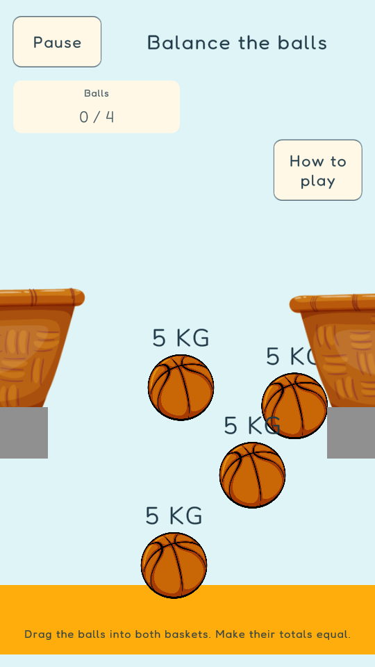
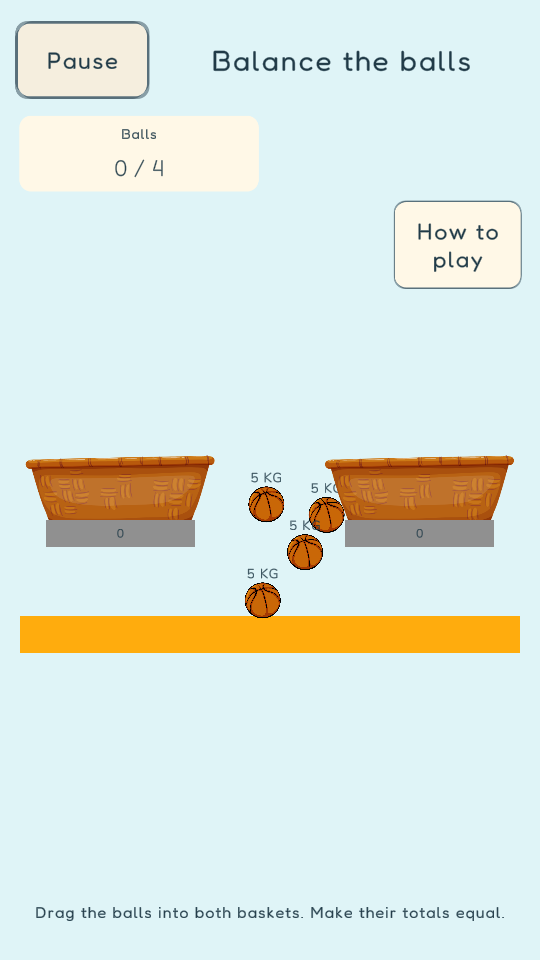

The balance board fits the screen
Actual Unity Game view captures at 540 × 960. The gameplay canvas now scales with the screen, keeping both baskets and all four balls visible.
Before
After
Scripted drag check: 20 × 10 pixels of pointer movement produced 20 × 10 pixels of ball movement. Touch input and gameplay on an Android phone remain untested.